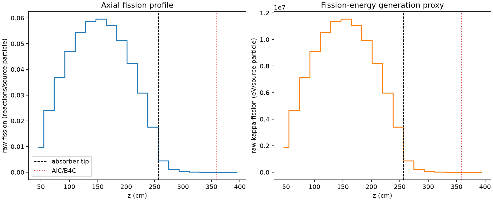
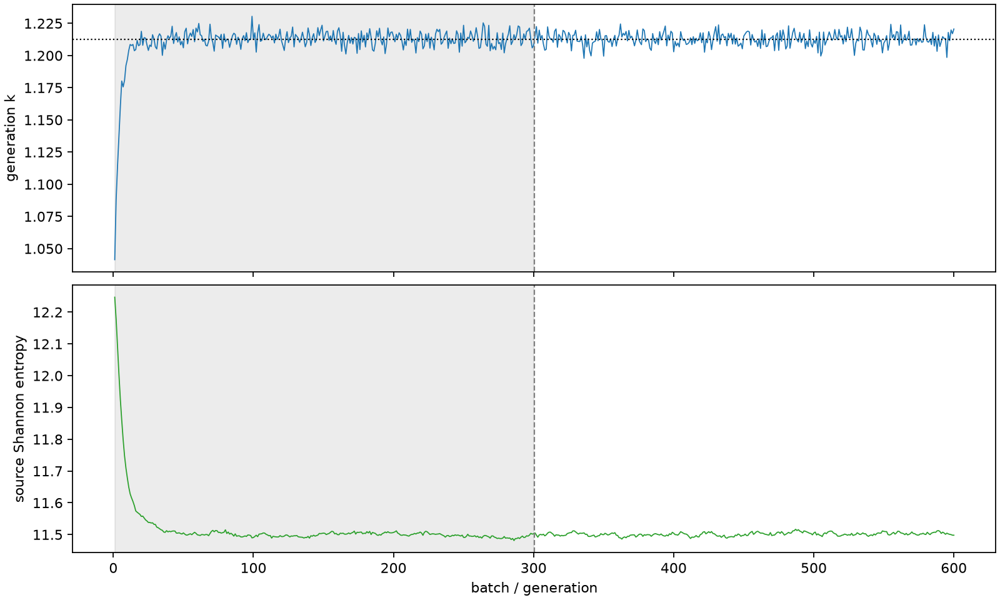

| field | value |
|---|---|
| experiment | V2-STAGE_256_OGRENCI_01-0032 |
| k | 1.212644649322799 |
| MC standard error | 0.00018808599081911455 |
| seconds | 957.4454991410021 |
| acceptance | not_assessed |
| convergence | review_required |
Completed is output integrity only; physical and statistical review required. Zero tallies do not prove zero production or zero uncertainty.
| diagnostic | value |
|---|---|
| geometric fuel voxels | 5280 |
| zero fission tally voxels | 116 |
| low signal fuel voxels | 1156 |
| low signal fission share | 9.978582442368513e-05 |
| low signal kappa share | 9.982221951779201e-05 |
| important fission share | 0.9500050022065708 |
| previous filter included | 4124 |
| duration estimate s | 1562.5173488400023 |
| actual minus estimate s | -605.0718496990003 |
| fission relative MC error | statistics |
|---|---|
| all_geometric_fuel | {"voxels": 5280, "positive_mean_voxels": 5164, "zero_mean_voxels": 116, "undefined_relative_error_voxels": 116, "median": 0.012068147827176544, "p95": 0.8062307666052, "maximum": 1.0000000000000002} |
| low_signal | {"voxels": 1156, "positive_mean_voxels": 1040, "zero_mean_voxels": 116, "undefined_relative_error_voxels": 116, "median": 0.5829527032000442, "p95": 1.0, "maximum": 1.0000000000000002} |
| important_95pct | {"voxels": 2763, "positive_mean_voxels": 2763, "zero_mean_voxels": 0, "undefined_relative_error_voxels": 0, "median": 0.008238355709413963, "p95": 0.012520396878461825, "maximum": 0.014339595426293391} |
| outside_previous_filter | {"voxels": 1156, "positive_mean_voxels": 1040, "zero_mean_voxels": 116, "undefined_relative_error_voxels": 116, "median": 0.5829527032000442, "p95": 1.0, "maximum": 1.0000000000000002} |
| kappa_fission relative MC error | statistics |
|---|---|
| all_geometric_fuel | {"voxels": 5280, "positive_mean_voxels": 5164, "zero_mean_voxels": 116, "undefined_relative_error_voxels": 116, "median": 0.012054474103947471, "p95": 0.8048747818641736, "maximum": 1.0000000000000002} |
| low_signal | {"voxels": 1156, "positive_mean_voxels": 1040, "zero_mean_voxels": 116, "undefined_relative_error_voxels": 116, "median": 0.5826906770786662, "p95": 1.0, "maximum": 1.0000000000000002} |
| important_95pct | {"voxels": 2763, "positive_mean_voxels": 2763, "zero_mean_voxels": 0, "undefined_relative_error_voxels": 0, "median": 0.00822967685917175, "p95": 0.012505313773935952, "maximum": 0.014322648812037786} |
| outside_previous_filter | {"voxels": 1156, "positive_mean_voxels": 1040, "zero_mean_voxels": 116, "undefined_relative_error_voxels": 116, "median": 0.5826906770786662, "p95": 1.0, "maximum": 1.0000000000000002} |
| axial bin | fission share | kappa-fission share |
|---|---|---|
| 1 | 0.019519001485797976 | 0.019519826800883194 |
| 2 | 0.04860968546190938 | 0.04860950658442434 |
| 3 | 0.07424070229619527 | 0.07424039710773842 |
| 4 | 0.09498832938998997 | 0.09498799942627133 |
| 5 | 0.10986039076211712 | 0.1098599159806962 |
| 6 | 0.11852354739948384 | 0.11852274938835554 |
| 7 | 0.1202729587070669 | 0.12027244824326559 |
| 8 | 0.11530668031245389 | 0.11530624526717446 |
| 9 | 0.10343264850236379 | 0.10343210686117335 |
| 10 | 0.0855060878033968 | 0.08550561948281034 |
| 11 | 0.06229180240091611 | 0.06229149133056342 |
| 12 | 0.03546666227982633 | 0.03546677478707822 |
| 13 | 0.009041329929823894 | 0.009043786942026387 |
| 14 | 0.002193366503738917 | 0.002194064860538921 |
| 15 | 0.0005565721105352475 | 0.0005567628895330298 |
| 16 | 0.00014537768318728157 | 0.00014542561228523366 |
| 17 | 3.353765369008313e-05 | 3.355148909373227e-05 |
| 18 | 8.56646321543178e-06 | 8.571189010143533e-06 |
| 19 | 1.9409314281318064e-06 | 1.9432284709605252e-06 |
| 20 | 8.11922863629666e-07 | 8.125286072166467e-07 |
Histories include the inactive-to-active transition at batch 300. kappa-fission approximates fission energy production, not total heat deposition.

